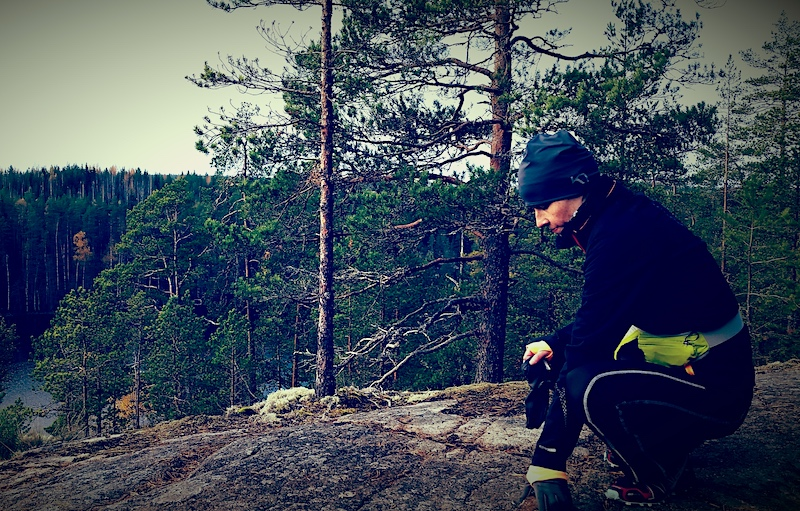

Seuraava "kätkö" löytyy suunnasta 020, etäisyys noin 45mm (4-5 askelta). Kuten arvasitkin, kirjaimista tulee muodostumaan sanoja, mutta
tässä vaiheessa voi olla vielä vaikea ja turhaa arvata niitä. (Tosin mikäli yhtään sinua tunnen, arvaat ne varmaan jo
paljon ennen luukkua 24.)

PS. Olet verratonta retkeilyseuraa. Ei siksi, että se olisi sinulle intohimo tai että sen pitäisi olla tai että
sinun pitäisi pitää
vaikkapa teltassa nukkumisesta tai ötököiden seassa tarpomisesta. Vaan siksi, että olet retkeillyt minun
kanssani, koska
olet halunnut retkeillä minun kanssani, hankkia minun kanssani talon "maalta" ja puolen metrin metsän
lapsillemme (ja minulle) puuhastelu- ja oleskelupaikaksi. :) Se osoittaa minulle, että arvostat minulle
tärkeitä asioita ja haluat jakaa ne myös lastemme kanssa. Olen kiitollinen siitä(kin) sinulle ja rakastan sinua
myös sen takia.